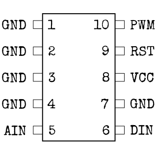
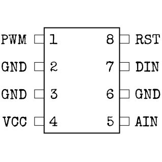

モジュール詳細：マイクロコントローラー
“マイクロ”コントローラーなのに、これはまあまあデカい。恐らくこれがデカい爆発を起こすからなんだろう...
- コントローラーに印字された名称とコントローラーの大きさから、下の表を使い、ピンの設定を見つける。
- コントローラーの白い印は 1 のピンの位置を示す。他のピンの番号については、1 のピン側から順番に数え、その後、反対側へ逆方向に数える。
- 下の表を使い、それぞれのピンの正しい色を見つける。
- 上もしくは下ボタンを使い、ピンを正しい色に切り替える。 そして、OKボタンを押す (次のピンは自動で選択される)。
ピンの設定
(ハイライト可)Strike (STRK) コントローラー:

Diode (LEDS) コントローラー:
Countdown (CNTD) コントローラー:
